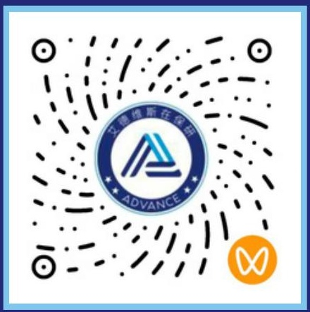

不了解本校规则
对推免资格、成绩计算、课程属性与加分政策理解不清，可能到大三才发现关键条件尚未满足。
2026 · 安徽大学 · FEIYUE PLAN
大学生全周期保研成长与升学规划方案
把大学阶段的每一份努力，转化为真正的竞争力。
ADVANCE 艾德维斯是一家面向本科生的长期成长与保研全流程服务机构。
升学规划的价值
保研不是从大三突然开始的一场冲刺，而是从大学早期逐步积累、持续校准的长期成长过程。
真正需要被解决的，是先做什么、为什么做，以及怎样把长期目标拆到每个关键节点。
识别门槛、优势与短板，确定优先级。
让每项投入服务于清晰的能力目标。
把长期目标拆成可检查的阶段成果。
教育不是替代学生努力，
而是让学生的努力更有方向。
WHY START EARLY
提前规划的意义，不是把大学生活变成无休止的竞赛，而是让每一份时间与精力都投入在正确的节点上，在关键选择前拥有更多主动权。
真正拉开差距的，是大学几年的持续积累。对推免资格、成绩计算、课程属性与加分政策理解不清，可能到大三才发现关键条件尚未满足。
活动、竞赛与项目之间缺少关联，经历很多，却难以转化为申请中可验证、可说明的能力证据。
到大三才寻找项目或准备竞赛，时间与积累深度有限，很难形成高质量的参与和代表性成果。
成绩与经历具备一定基础，但缺少院校定位、材料表达、导师联系和面试训练，优势难以被准确看见。
扎根高校、长期管理、专项协同与真实成长缺一不可。成绩、科研、竞赛与申请之间，需要一套统一的机制进行连接。
理解本校规则、课程难度与学院差异。服务围绕学生所在高校展开，让建议贴近真实情境。
连接不同院校与学科方向的导师资源，补足跨校信息差。
一名长期主管统筹，N 名专项导师按需加入。
战略决策、能力成长与申请作战形成同一条成长链路。
建档、任务、复盘与阶段验收形成可追溯记录。
成果来自真实经历、真实数据与可说明的个人贡献。
真正拉开差距的，是大学几年的持续积累。选择阶段，查看每一年的关键任务与阶段成果。
YEAR ONE / BASE
“从零开始，并不意味着只能选择基础版本。”
YEAR TWO / BUILD
“能力不是名词，而是一次次真实参与后的方法沉淀。”
YEAR THREE / PROVE
“不是项目越多越好，而是形成与目标院校匹配、可验证的成果。”
YEAR THREE / POSITION
“让能力被准确看见，是申请阶段真正要完成的工作。”
YEAR FOUR / CONVERT
“申请不是一次投递，而是一套在关键节点持续校准的作战系统。”
保研不是若干课程和项目的简单叠加，而是一项持续数年的系统工程。方向判断、能力建设和申请转化，需要被连接起来。
去哪里、走哪条路、先做什么。
拿什么参与竞争，如何形成实力。
如何让能力被看见，并转化为结果。
1+N 导师体系 × 全过程管理机制，让方向、能力与申请不再彼此割裂。
长期主管统筹建档、规划、任务分配、进度督学、阶段复盘与风险预警；专项导师在需要的节点加入，解决具体专业问题。
所有服务的圆心。以学生真实基础、目标与节奏为起点，动态确定任务优先级。
MENTOR NETWORK / DISCIPLINES
导师资源覆盖理工、材料、计算机、法学、语言、人文与管理等方向。专业问题由对应领域导师承接，长期主管负责把专项建议重新纳入整体成长路线。
本校政策解析、目标院校定位、任务分配、进度督学与阶段复盘。
政策 · 定位 · 督学 · 复盘公共课、专业课、学习方法、课程规划与专业分流支持。
课程 · 方法 · 绩点 · 英语方向探索、文献阅读、研究方案、实验分析、论文写作与规范表达。
选题 · 方法 · 数据 · 论文赛事筛选、项目训练、文书材料、导师联系、笔试面试与志愿填报。
竞赛 · 材料 · 面试 · 投递清华大学 · 北京大学 · 上海交通大学 · 浙江大学 · 南京大学 · 中国科学技术大学 · 同济大学 · 东南大学 · 合肥工业大学 · 安徽大学
不同学校、学院和专业对六项能力的关注重点不同。评估的价值，是分清门槛、优势与下一步行动。
示意图仅用于说明模型结构，不代表个人测评结果。
绩点、排名和专业基础，是获得本校推免资格的重要底座。不同学院的课程权重与排名规则需要单独理解。
三个版本不是学生分层，而是目标与资源配置分层。选择时应结合目标院校范围、当前基础、可投入时间与培养深度综合判断。
夯实基础 · 建立完整路径
从规则、绩点与英语起步，完成科研竞赛的第一次真实参与，建立一套完整、均衡的保研准备路径。
扩大目标院校选择
在完整路径上增加专业训练、科研竞赛深度与成果组合建设，面向目标更明确的 20 所 985 院校。
高阶培养 · 面向 C9 目标
围绕高阶专业与科研训练、代表性成果建设和 C9 院系深度适配，提前配置更高强度的培养资源。
| 对比维度 | 标准版 | 旗舰版 | C9 版 |
|---|---|---|---|
| 服务目标 | 985 推免 | 20 所 985 定向 | C9 推免 |
| 核心专项 1 对 1 | 45 课时 | 75 课时 | 90 课时 |
| 论文 1 对 1 指导 | 10 课时 | 20 课时 | 20 课时 |
| 校内科研支持 | 12 个月 | 24 个月 | 24 个月 |
| 竞赛成果支持 | 省级 2 项 | 国家级 1 + 省级 2 | 国家级 2 + 省级 2 |
| 论文训练与投稿 | EIC 论文录用 × 1 | EIC 论文录用 × 2 | EIC × 1 + EI 期刊 × 1 |
| 名校教授科研训练 | 不配置 | 不配置 | 配置 |
| 申请支持侧重 | 完整申请流程 | 20 所 985 定向规划 | C9 院系与研究方向深度适配 |
具体课程、课时、赛事与科研资源以正式合同及当年政策为准；目标院校范围与服务边界需在评估后共同确认。
从成长逻辑看，它是三大系统与 1+N 导师体系的协同；从交付方式看，它由五个服务模块组成，并通过月度管理持续推动。
理解本校规则，明确目标方向，形成院校与专业的初步路线。
长期主管持续跟进，把规划拆成月度任务，在关键节点提供支持。
围绕绩点、英语、科研、竞赛与论文，逐步建设可验证的能力证据。
完成院校定位、材料准备、导师联系、笔面试与志愿填报。
根据实际需要补充科研课程、学术资源与个性化学习内容。
长期主管对全过程协调负责，专项导师对专业辅导内容负责；关键任务、成果和调整均形成可追溯记录。
科研、竞赛和论文不是三项相互独立的“背景包装”，而是专业能力形成和成果沉淀的三种重要路径。
从参与项目到理解研究，掌握方法，承担真实任务并说明个人贡献。
把专业知识转化为作品、模型、代码或方案，形成可展示、可答辩的成果。
把研究过程沉淀为规范表达，训练文献、结构、写作与投稿的基本能力。
把真实经历组织成目标院校可理解的申请材料与现场表达。
真实问题 · 真实方法 · 真实数据 · 真实贡献
成果与录取受研究质量、独立评审、当年政策与院校名额影响。服务不替代学生真实参与。版本与配置由学生、家长在理解目标、资源差异和服务边界后共同确认。先完成沟通与评估，再决定下一步。
SCAN TO CONNECT

扫码了解更多内容，或预约线下咨询。
以下回答基于《飞跃计划手册》的服务逻辑整理。具体安排仍需结合学校政策、个人基础与当年申请情况确认。
不早。提前规划不是提前焦虑，而是尽早理解本校规则、守住绩点与英语基础，再逐步观察自己的科研与竞赛兴趣。大一阶段不必过早锁定版本，但可以先把关键底盘建立起来。
三个版本不是学生分层，而是目标与资源配置分层。应结合目标院校范围、当前基础、可投入时间、科研竞赛成果建设深度以及家庭对长期培养强度的预期综合判断，不建议仅凭当前成果简单选择。
不会。教育不是替代学生努力，而是让学生的努力更有方向。科研、竞赛、论文与申请材料都应建立在学生真实参与、真实数据和可说明的个人贡献之上。
服务坚持真实问题、真实方法、真实数据与真实贡献。赛事级别、获奖顺位、论文录用情况均以原始证明和正式文件为准，不使用虚构材料，也不以“挂名”替代真实参与。
不能承诺具体录取结果。最终结果受研究质量、独立评审、当年政策、院校名额与竞争情况影响。服务能够做的是帮助学生更准确地定位、更扎实地积累，并把真实能力组织成清晰、可信的申请表达。
服务以安徽大学近场服务为起点，同时连接全国专业资源与 5 校 10 区高校服务网络。不同学校与学院的政策、课程和推免规则会分别理解，专项问题由对应方向导师承接。
通过建档、规划、执行、复盘、阶段验收与申请交付形成完整记录。长期主管负责全过程协调，专项导师负责具体辅导内容，关键任务、成果和方案调整均形成可追溯档案。